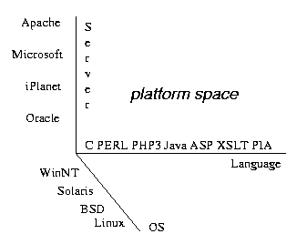

This White Paper is intended for web developers. It describes a way of creating platform independent applications that can not only be deployed on many different operating systems and servers, but also interoperate with existing and future web applications. The PIA framework provides support for the development of platform independent applications and is further described in a companion white paper, "Web Applications and the PIA".
[For submission to WWW9 Developer's Day XML track.]
Developers face a maddeningly wide array of choices for creating web applications. In addition to choosing an operating system and web server for deployment, most applications require choosing a database, development environment, scripting language(s), HTML standard, and whether to use Javascript or other client side components. These choices have direct and, sometimes unintended, consequences for the long-term success of the application. For example, a Javascript dependent site for stock trading might look great on Internet Explorer 5.0, but may be entirely inaccessible to the growing number of customers who have wireless Web access from a PDA. Even worse, compatibility issues may cause months of reengineering and cost a company their most precious commodity in this web world -- lead time. As an example, Active Server Pages may make it easier to maintain an online catalog using a tool like Front Page, but may not run on the same operating system as the C based CGI scripts for tracking shopping carts and transactions.
Despite the growing popularity of Apache, PHP, and other open source tools that operate on multiple platforms, the choices for web application design, development, and deployment continue to proliferate and diverge. [do we need examples here?] This paper describes an approach to Web application development that minimizes platform dependencies and maximizes interoperability. A somewhat unconventional use of XML (eXtensible Markup Language) plays a key role in this design. Applications consist primarily "active" XML pages which use a vocabulary of domain-specific markup language tags. The server interprets these tags to perform processing appropriate to the context, for example to insert the results of a database query or simplify the content for a text only client.
The wide support for XML ensures that these types of applications can be developed and modified on virtually any existing platform. To handle the remaining platform dependent issues, namely tag implementation and application configuration, we propose using technology based on the open source PIA (Platform for Information Applications). The PIA is a Java based web server and application framework in which tag actions can be implemented in Java and site configuration information is flexibly specified via XML documents. The PIA provides a number of features which make it well-suited to prototyping and customizing web applications.
These sort of XML based web applications can be deployed on existing Web servers either by incorporating the PIA engine as a module (e.g. servlet), or by creating static versions of the pages with the appropriate substitutions. As server engines provide more sophisticated native support for XML processing, these application should enjoy true platform independence.
As a developer, should I use Apache or IIS? Should I write scripts in PERL, PHP, ASP, JSP, or some other language? Should I include Javascript in my HTML or HTML in my Java? Answering these questions gets harder every day as the number of servers, clients, languages, development environments, and target markets continue to grow and change. Open source software and platform independent designs can avoid many of these difficulties, speed development, and reduce maintenance costs.
 Servers, operating systems, and languages constitute a three-dimensional space; any point in that space represents a ``platform'' upon which a web application can be built.
According to the Netcraft Web Server Survey there are 10 different software "vendors" providing Web servers to more than 60,000 public sites each. If we counted separately the number of different (incompatible) versions of server software from the same vendor the number of different servers would grow substantially and continues to increase.
The open source Apache software leads the web server market with approximately 50% of the publicly accessible web sites. It does run on most operating systems (in particular most Unix and Windows variants) and provides a good deal of flexibility and system configuration (at the cost of increasing installation and management complexity). This flexibility allows Apache to work with wide range of different languages for providing dynamic content. CGI scripts can be written in C, PERL, Python, or any other traditional programming language, while modules support server side processing of embedded scripting languages such as PHP or JSP (Java Server Pages). While most servers provide some support for scripting languages, they vary greatly in the allowable languages and interfaces especially for scripts embedded in HTML/XML pages.
| Market Share for Top Servers Across All Domains |
|---|
|  |
| Market Share for Top Servers Across All Domains |
| Source: Netcraft Web Server Survey, http://www.netcraft.com/survey/ |
Note that this survey groups servers together by vendor (so that the ``Microsoft'' category, at nearly 25%, covers a total of five different server versions on several different operating systems). Furthermore, it covers only publicly-accessible web sites -- the majority of web applications are intranet sites, hidden behind corporate firewalls. |
We note in passing that ``traditional'' web servers are unlikely to dominate the field of web applications in the future, and indeed may not dominate even today. Small web servers can now be found inside of a wide range of ``appliances'' including printers, scanners, routers, ethernet switches, and file servers. Still others are specialized servers running on ordinary personal computers in order to ``web enable'' some attached peripheral such as a scanner or digital camera (``web-cam'').
The range and capabilities of web clients seems to be growing and diverging even faster than Web servers. Looking at just PC-based browsers, one sees great differences in how they render HTML much less advanced features like Javascript and style sheets. Moreover, each new version introduces significant changes in functionality not supported by the installed base -- effectively increasing the number of clients. This trend is likely to continue, because new browsers like Opera continue to appear, and old standbys continue to be popular in niche markets (for example, visually handicapped users overwhelmingly prefer the text-based Lynx browser).
Furthermore, as with servers, web browsers on personal computers represent a declining segment of a potentially huge market for web clients. It is now possible to browse the web from a WebTV, a Palm Pilot or other PDA, an alphanumeric pager, or a cellular phone. Web-enabled microwave ovens, refrigerators, and even dishwashers have been announced; such appliances are likely to include a web server as well, with the client doing double duty as web browser and front panel.
[Note Nokia phone from WSJ article, GE refrigerator, Mozilla]The Browser Trends page at Browser News shows a month-by-month history of browser usage since 1998.
[implications for developers?]An additional segment of the web application field that has gotten little attention so far is the proxy: an application that sits between client and server, performing some useful function. Web caches, banner-ad eliminators, and ``parental choice'' filters all fall into this category; a huge number of users have used this kind of web application without knowing it (especially since AOL runs a proxy for all of its customers).
In the future, we are likely to see an increase in the number of web applications that operate as proxies for performing a variety of document processing operations, including formatting, annotation, and content filtering.
Unlike the platform arena, there has never been a single strong market leader in development environments for web applications. Indeed, most applications are probably developed using a combination of text editors for code, and word processors for HTML documents. A large amount of content, moreover, is imported from other environments, including databases and text files (for example, newswires, mailing lists, and Usenet news feeds).
[Don't we want to distinguish between "discussion group" and application customization?]When we leave the original development environment and look at customization, however, the field is narrowed somewhat. Probably most free text input on the web is done using HTML forms (for example, news items and comments submitted to Slashdot). Many sites include personal web pages, most of which are probably created using a browser.
With the advent of the WebDAV protocol, which allows ``distributed authoring'' by giving HTTP clients access to server-based files and metadata, it is likely that web applications with multiple developers will be developed using multiple tools, since each developer will be able to use their own favorite set. Even without WebDAV, many applications (especially in the Open Source community) are developed using CVS and other server-based version-control systems.
Indeed, the line between dynamic content and the development environment is already getting rather fuzzy. It is ``traditional'' to upload dynamic content to a server, and have it converted into HTML (possibly in several different styles) ``on the fly'' as it's being streamed out to the client. But content developers have access to the same stylesheet-based transformation tools at their desktops, so they could perform the style transformations once and upload the resulting static content, which would place less of a load on the server. Then again, a sufficiently clever server could accomplish the same thing by caching.
Another point to consider is that most web applications evolve over time, and may involve many developers, content contributors, customizers, and collaborators. Not only will these contributors all be using different development platforms, but the application may have to be ported from its original server platform to another. This may happen because of inadequate performance, software or hardware obsolescence, or external factors such as corporate mergers or standardization decisions.
Developers have recognized the need to maintain compatibility between web applications. Integrating the process of ordering an item from a retailer's site with the fulfillment of that order through the supplier's site provides enormous productivity and efficiency gains. This is one of the motivating factors in the widespread adoption of XML as a platform independent lingua franca for representing documents and data.
XML is a step in the right direction, but it does not, by itself, lead to platform independent web applications. Developers must still choose what server, language, operating system, a database, etc. on which to implement their processing. Given the wide array of options outlines above, this can be a difficult task. It becomes impossible when one starts to consider:
By adding a standard design and processing model, we can leverage XML to achieve the goal of platform independent web applications. In particular, applications consists of XML documents developed using a set of application-specific tags. In a typical scenario, a client request is directed towards one XML document which the server retrieves and processes by dynamically modifying the XML according to the context and configuration information.
An entire application consists simply of XML documents and some specification of the processing associated with the tags. This specification is itself an XML document, which we call a tagset. Most tags will be defined in terms of other tags, but for some of the "primitive" tags, the tagset references a native implementation. In our case, this would be a Java class implementing the appropriate interface.
In essence, a web application is a web site or part of a web site that performs some useful function (for example, configuring a printer or ordering groceries). It typically consists of the following components:
There are three main approaches to server-side processing:
The PIA is described in more detail in other white papers, specifically Web Applications and the PIA and Document Processing in the PIA. For now it is sufficient to explain that it combines aspects of both the embedded action and tag definition approaches. It uses a complete programming language with XML syntax; this allows actions to be embedded in documents, but also allows the use of a separate tag definition file in the same XML-based language.
Some of a web application's components are much easier to move between platforms than others:
.html to
indicate a text/html document; Windows uses
.htm. MacOS uses a file type stored in the file's
resource fork.
Polish.html and polish.html. On other
operating systems one of these documents would have to be
renamed.
index.html file.
The structure of the PIA makes it particularly easy to move an application from one platform to another. Because the only non-XML components of a typical PIA application are the processing engine and the low-level or ``primitive'' tag handlers, the worst case is that this small amount of code may have to be rewritten to fit into the new platform.
The usual case is much better, because the PIA's document processor and tag handlers are already written in popular programming languages (Java and C) using standard interfaces (SAX and DOM), and so are already able to fit in to the most popular web application platforms. This means that porting a typical application may only involve rewriting a few custom tag handlers (perhaps with operating system dependencies) and possibly translating the application's configuration files.
Portability of document names and site structure are not a significant problem with ``pure'' PIA applications because the PIA's site configuration mechanism encourages the use of names without extensions, and allows arbitrary mapping of URL's onto files and directories. This means that an application's files and directories can be renamed to fit the platform without changing the URL's exposed to the clients. Moving a PIA application to a platform that doesn't include the PIA's site configuration package is fairly simple in platforms like Apache that include a URL rewriting mechanism.
The PIA is primarily designed for web applications that are ``document-oriented'' -- both the ``content'' or data, and the processing instructions (including so-called ``business rules'' as well as stylesheets and ``macros'') are represented as XML documents. The PIA is also server-based: all of its processing is done on the application's server.
We note in passing that the fact that the PIA does its document processing on the server in no way prevents active documents, including Cascading Style Sheets, Javascript and Java applets, from being passed to a browser client where appropriate. It does mean that ``stylesheet'' processing can be done entirely on the server, making an application accessible from any browser. [In particular, a tags might expand into either Javascript or HTML depending on the capabilities of the client, though I would not want to write such an application.]
The point is worth emphasizing: a PIA web application consists entirely of XML and HTML documents, except for the document-processing ``engine'' that interprets the processing instructions. Using server-side XML to build a web application has a number of advantages:
The PIA's particular XML processing engine has a few additional advantages:
The PIA application platform also provides some additional functionality beyond the simple XML-based document-processing engine:
A detailed discussion of the relationship between the PIA and other web technologies, including standards and protocols, can be found in Web Applications and the PIA. In this section, we discuss making PIA style applications run on other platforms.There are three ways of running PIA applications on other servers:
Because of its implementation, the PIA's document-processing engine (and to a lesser extent its site-description mechanism) are particularly easy to incorporate into other web application platforms. This makes it possible to build mixed systems that satisfy requirements (e.g. for performance or interoperability) that cannot easily be met by the PIA alone. It also makes it easy to fit the PIA into existing systems, adding new capabilities without forcing a change of platform.
Since the PIA's reference implementation is written in Java, and since it uses standard API's internally, it is easily incorporated into other Java-based application platforms.
The most common Java-based application platforms are web servers that use
the Servlet (javax.servlet package) API. Servlets provide a standard
internal interface between a web server and Java code, and are a natural
fit to the PIA.
The PIA provides two different Servlet implementations:
Cocoon is a pure-XML engine based on XML-to-XML transformation engines called ``processors.'' The standard Processor in Cocoon is an implementation of the XML tree-transformation stylesheet language XSLT. The PIA's document processor fits naturally into the Cocoon environment.
There are two main interfaces used in Java for manipulating XML and HTML files:
C is still by far the most widespread, most portable, and most completely standardized programming language currently in use. It is particularly common to find a C compiler, and very little else, on the small or unusual processors used in embedded systems. Also, many major pieces of software are written in C; in particular, the Apache web server.
In order to better integrate with Apache, and in order to better serve the embedded system and network appliance markets, we have started an effort to re-implement the PIA's document processor in C. In addition to improved interoperability, we expect this implementation to have substantially better performance than the Java version.
Since Apache dominates the server market, with almost 60% of the installed base, we consider integration into Apache particularly important for the PIA.
Some servers, notably Apache, have the ability to invisibly route or proxy selected URL's to another server. In fact, this ability is used inside Apache for its interfaces to Java and PERL. It requires only a single line in Apache's configuration file, plus two parameters in the PIA's configuration file, to use the PIA in this mode.
One advantage of using the PIA ``inside'' another server is that static pages can usually be served more efficiently by the other server. Another is that a server such as Apache can provide services, such as virtual hosting and access to privileged ports, that are difficult for the PIA.
One example is access to privileged ports, including port 80. On Unix machines, only the ``superuser'' can access port 80, so a web server is expected to be started by the superuser and to change its user ID, typically to something safe like ``
nobody,'' after opening its port. Doing this in Java requires a non-portable native method. It was far simpler to start the PIA under its own user ID and let Apache ``front'' for it.
Copyright © 2000 Ricoh Silicon Valley
$Id$